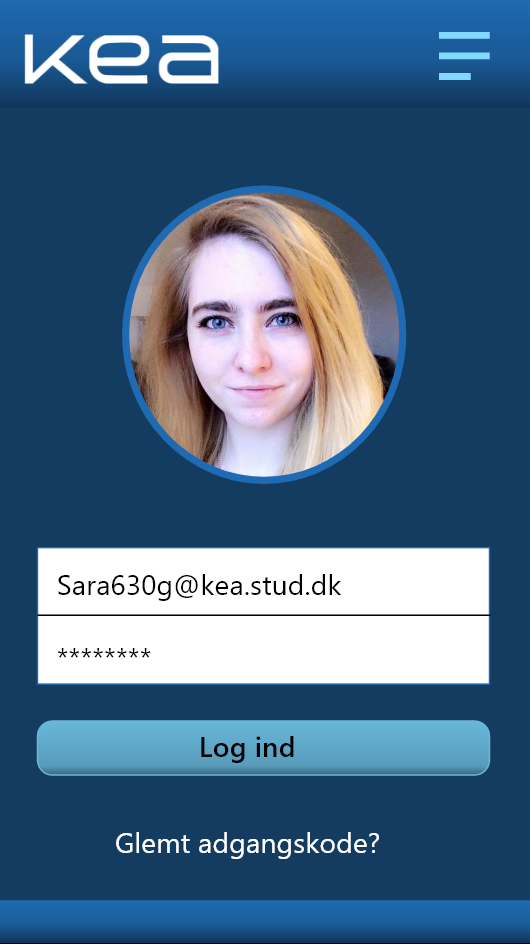
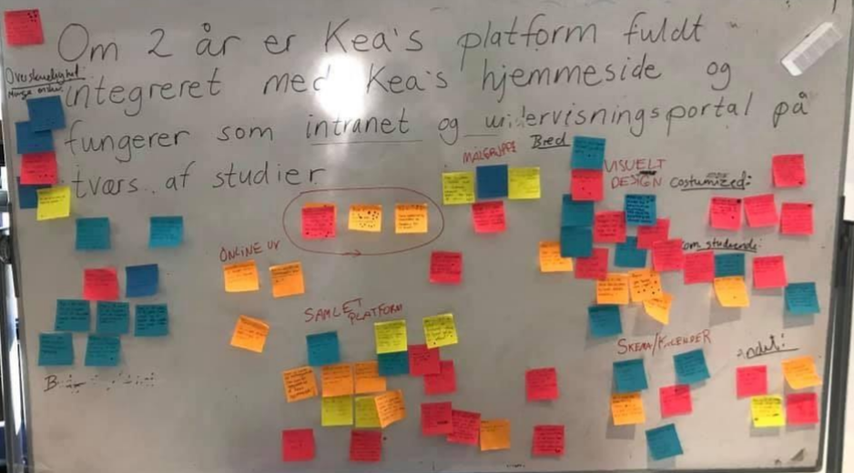
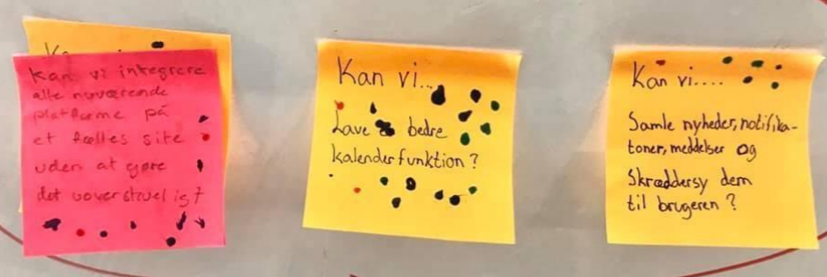
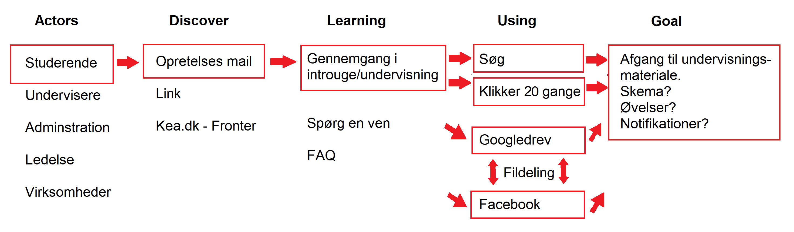
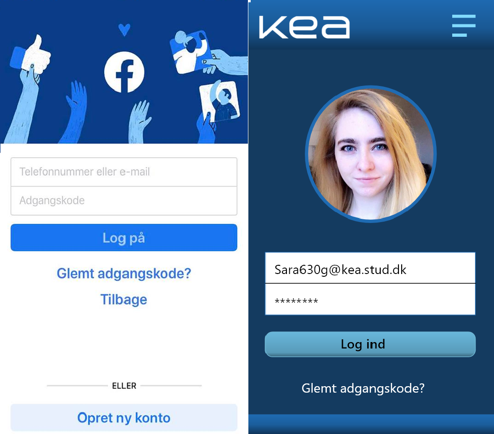
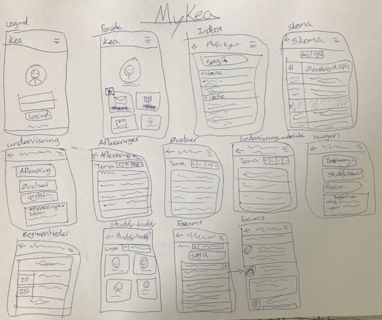
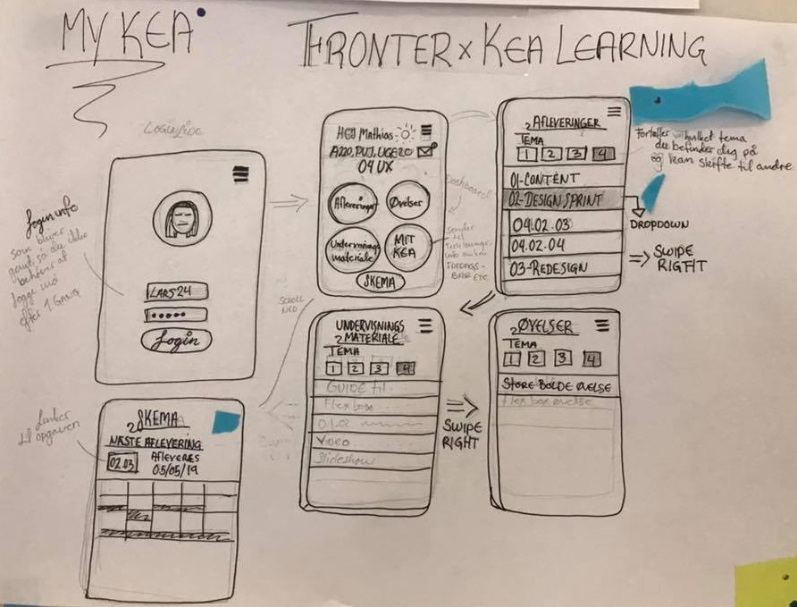
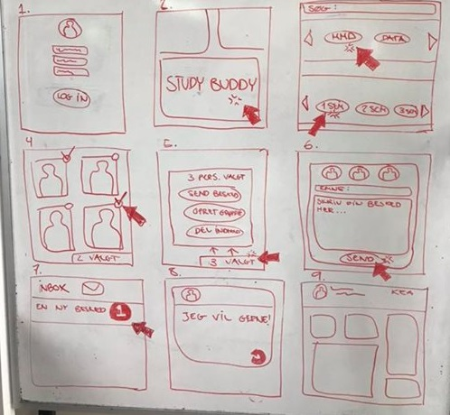
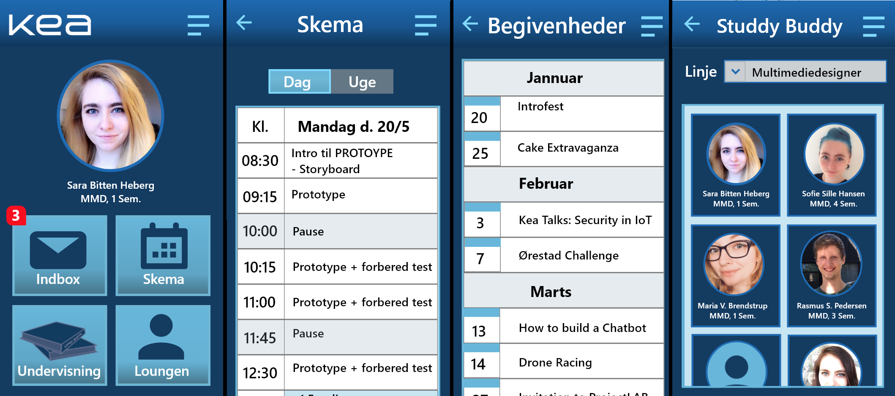

TEMA 4 GRUNDLÆGGENDE UX
04.01.01 Design Sprint
I denne opgave lærte vi at skabe en prototype, gennem en række hurtige processer med Design Sprint. Den færdige prototype udviklede vi i XDesign, hvor jeg nok havde størst fokus på sprint-questionet: Kan vi samle nyheder, notifikationer, meddelelser og skræddersy dem til brugeren? Her er hovede fokuset i min prototype ikke alle dens funktioner, men hvordan infoen skal være let tilgængelig. På min forside er det sådan at der er 4 bokse: indbox, skema, undervisning, og loungen. Her er min tanke at man selv skal kunne indstille hvilke 4 boxe man ønsker på sin forside, så brugeren selv kan skrædersy det efter hvad de ønsker. Hvis de fx ønsker at være mere sociale på kea, kunne de fx skifte en af boxene ud med: begivenheder.
Værktøjer brugt
Adobe XD
Proces
Map
Sketch
Decide
Prototype
Test
Long Term-goal
- Om 2 år er KEA’s platform fuldt integreret med KEA’s hjemmeside og fungerer som intranet og undervisningsplatform på tværs af studier.
Sprint-question
- Kan vi samle nyheder, notifikationer, meddelelser og skræddersy dem til brugeren?
- Kan vi lave en kalender-funktion?
- Kan vi lave en samlet platform af alle KEAs platforme?
Lightning Demos
Facebook
Fronter
Gmail
Tinder (swipefunktion til studdy buddy)
Woman (forum/debat)
Uddvalgte Ligthning Demos
Facebook
Woman (forum/debat)
Link til egen protoype
Kan ses her: Link
Design dokumentation
Design sprint - KEA

Long Term-goal

Sprint-question

Map

Lightning Demos
Facebook

Woman (forum/debat)
Sketch (Solution sketch)

Decide (super vote)
My Kea

Studdy Buddy

Prototype
